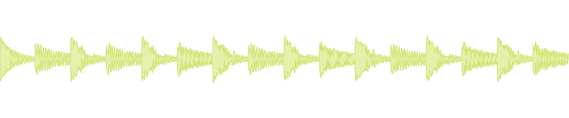
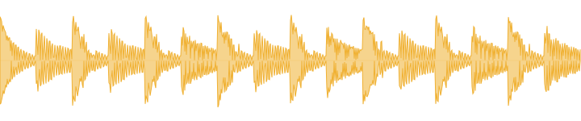
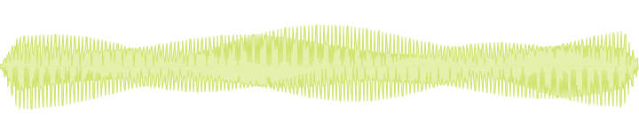
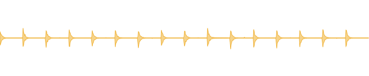
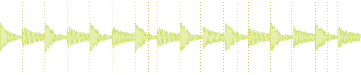
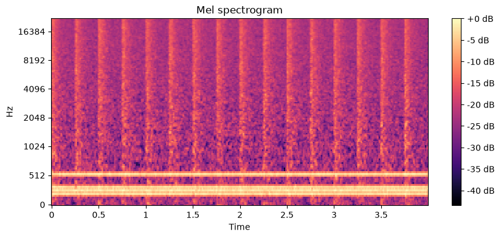
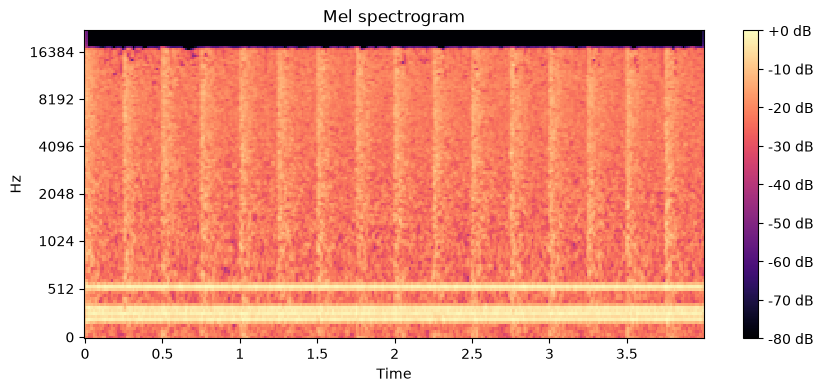
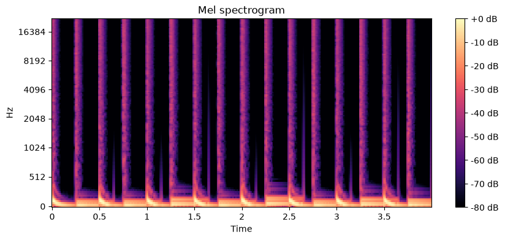

An audio-analysis toolchain you pipe like jq.
Each stage passes along a small self-describing record that
points at the audio, so a pipe can split a sample apart, reshape one
piece, and hand back measurements with units. Nothing exotic underneath:
one line of JSON per step, ordinary audio files on disk, and standard
tools like sox and ffmpeg plug straight
in.
$ smpl read kick.wav | smpl stems | smpl select --role stem:drums \ | smpl filter --hp 200 | smpl env --pluck | smpl describe | smpl view
In plain words: load kick.wav, split it into stems, keep the drums, cut everything below 200 Hz, tighten the volume envelope, measure what is left, and print the report. Each step is its own small command; the results flow left to right.
Part of the LEMON house · lemon-agent.dev teaches the agent method · lemon.audio is the music side of the house

One JSON object per line flows between stages: what the audio is,
where it came from, what has been measured so far. The heavy bytes
stay on disk. jq, grep, and a text editor
all work on the stream.
Audio lives in a local store keyed by a hash of the decoded PCM,
not the file bytes. Two identical stems share one blob, and any
frame can be turned back into a file path with
smpl resolve.
Every operation records its name, version, parameters, and inputs on the frame it emits. Results carry their own lineage, identical audio shares one address in the store, and any run can be reproduced exactly.
Five real runs on generated test audio. The commands shown are the commands that made the pictures and the numbers, and the players hold the actual sound that went in and came out.
Never used a terminal pipeline? Three symbols carry everything on this page. A line starting with $ is a command you paste into a terminal (the $ itself is not typed). The | is a pipe: it feeds the output of the command on its left into the command on its right, so a chain reads left to right like an assembly line. A trailing \ only continues a long command onto the next line.
Level a quiet bounce
The loop was exported too quiet. One command raises it to a standard streaming loudness, with a safety ceiling so no peak distorts on the way up.
$ smpl read loop.wav | smpl normalize --lufs -14 | smpl write leveled.wav
read loads the file, normalize raises it toward -14 LUFS without letting any peak past the ceiling, and write saves the result as a new file.
integrated -20.79 LUFS · true peak -6.71 dBTP

integrated -15.08 LUFS · true peak -1.00 dBTP
The honest part: the target was -14 LUFS, and the result is -15.08. Reaching -14 would have pushed the true peak past the default -1 dBTP ceiling, so the ceiling won and the output sits at exactly -1.00 dBTP. The tool tells you what it did instead of pretending it hit the number.
Reshape a pad into a pluck
A sustained pad goes in; a plucked version comes out. Only the loudness contour changes. The tone underneath stays the same, which is why the after still sounds like the same chord.
$ smpl read pad.wav | smpl env --pluck --release 0.6 | smpl write pluck.wav
read loads the pad, env reshapes its volume over time (a fast attack, then a 0.6 second decay), and write saves it.

a sustained chord, level held for 3 s
same audio under a pluck envelope, 0.6 s decay
The amplitude envelope family (env)
also does fades and gates. Like every edit stage it emits a new frame
with role source.wet; the dry frame stays in the stream
untouched.
Strip the low end
Everything below 200 Hz goes. The kick's body and the bass fundamentals drop out, and what is left is the top of the kit: the click, the hats, the harmonics.
$ smpl read loop.wav | smpl filter --hp 200 | smpl write thin.wav
read loads the loop, filter keeps only what sits above 200 Hz (hp is short for high-pass), and write saves the thin version.
kick and bass carry most of the level

high-passed at 200 Hz: hats and bass harmonics remain
Find the hits
Nothing is changed here. The tool listens for the start of each drum hit and writes the times down as data you can use: for chopping a loop into slices, or for lining edits up with the hits.
$ smpl read loop.wav | smpl slice
read loads the loop and slice detects where each hit begins, emitting the list of times alongside the audio.

18 onsets detected; the amber dashes are the marker frame drawn over the input
Markers are frames too: slice emits a
marker frame with a timestamp per onset
(0.244 s, 0.488 s, 0.743 s, …), and can
materialize each slice as its own audio frame. Downstream stages can
select one hit by role, the way the command at the top of this page
picks out the drums.
Catch a WAV that used to be an MP3
Someone hands you a WAV file. Was it recorded that way, or was it once a small MP3 dressed up in a WAV container? MP3 encoders throw away the highest frequencies, and that scar never heals. The tools answer with a picture and a number.
$ smpl read suspect.wav | smpl qc | smpl spectrogram
read loads the file, qc measures
where the high frequencies stop, and spectrogram draws the
picture (time runs left to right, low notes at the bottom, highs at
the top). Add | smpl view on the end for the full
report.


The suspect file is the clean one after a round
trip through a 64 kbps MP3. The encoder's low-pass shows up as the
black cap on the spectrogram, and qc reports it as
numbers: measured cutoff 16,462 Hz against an expected
22,050 Hz, confidence 0.856. These spectrograms are smpl's
own output images, copied straight out of the store.
Every number and picture in this section comes from docs/make_assets.sh, which generates the audio, runs the pipes shown, and saves the results (plus a numbers.json receipt). When the tools change, re-running that script either regenerates the page cleanly or visibly breaks it.
The same mechanics as every example above, slowed all the way down. One fixed pipe, four stages; each stage does its one job and passes everything it received along, plus what it added:
$ smpl read loop.wav | smpl loudness | smpl qc | smpl view
smpl read loop.wav
Loads the file into the local store and describes it. No audio flows in the pipe itself, just the description.
smpl loudness
Measures loudness. The audio frame passes through untouched; a frame of numbers joins it.
smpl qc
Runs the health checks on the same stream, and marks where any defects sit in time.
smpl view
Reads everything that accumulated and renders one report, every number with its source.
Nothing here re-opened the audio file or re-ran an earlier step. Each stage saw everything the previous stages knew, because the stream carries the knowledge forward. That is the whole trick, and every pipe on this page is this same picture with different stages.
The point of the pipe design is that stages combine in ways nobody planned. Three examples of what that buys:
$ smpl read loop.wav | smpl loudness | jq 'select(.kind=="feature").data' { "loudness.integrated_lufs": -20.79, "loudness.true_peak_dbtp": -6.71, "loudness.max_short_term_lufs": -20.71 }
Ask for loudness, then pluck the answer out of the stream with
jq, the standard command-line JSON tool. No parser, no
export step: measurements are already plain JSON, one object per
line.
$ smpl read x.wav | smpl as-wav | sox - -t wav - reverb 50 \ | smpl from-wav --role x.wet --derives-from source | smpl describe
Here sox, a classic audio tool from 1991, adds the
reverb. as-wav hands it plain audio, it does its thing,
and from-wav stores the result as a new frame that
still knows what it came from. Any tool that reads and writes WAV
through a pipe, sox and ffmpeg included, becomes an smpl stage this
way.
$ smpl read kick.wav | smpl stems | smpl select --role stem:drums \ | smpl filter --hp 200 | smpl env --pluck | smpl describe | smpl view
The tail of the pipe sees the whole lineage: original, stems, the
filtered subcomponent. describe measures whatever is
selected, and view renders the report for exactly that
piece, not the whole file. (stems is a heavy tool with
its own install; see the tiers below.)
One smpl command, 47 built-in subcommands, each doing one
thing well. Nearly all of them read the stream in and pass the stream
along, so they can sit anywhere in a pipe; the exceptions are the
deliberate edges, like as-wav (raw audio out, for the
bridge) and write (a file, at the end). The highlights,
from smpl --help:
read / writefile in, frames out; selected frame back to a fileresolvehash, id, or role to a real file pathconvertformat, sample rate, bit depth via ffmpegas-wav / from-wavthe raw-WAV bridge to sox and ffmpeggccollect unreferenced blobs from the storeloudnessintegrated LUFS, true peak dBTP, short-term LUFSspectralflatness, crest, spread, rolloff, contrast, slopeqcclipping, phase, DC offset, SNR, lossy-origin cutoffdescribe-allthe whole light tier in one stage, plus caption and imagespectrogrammel, CQT, HPSS, and waveform renders as image framescat / describedescribe as a filter: passthrough plus features, caption, imageviewone markdown report over everything in the streamgain · normalize · limitdB gain, LUFS target with a true-peak ceiling, peak capmaximize · compresslook-ahead brickwall drive; downward compressioneq · filterpeaking and shelf EQ; high, low, band passenv · fx · automateenvelopes; sox reverb and delay; parameter motion over timestereoize · widenmono to wide, and M-S width with a mono-safe low endspectral-matchEQ one sound toward a reference's balancesliceonset detection to marker frames, optionally sliced audioselectfilter the stream by role or kindpatterna step-grid drum-loop DSL with velocity, pitch, swing, nudgeAnything with
big machine-learning dependencies lives in its own isolated install,
so the core never pays for it at startup. smpl stems
simply hands off to smpl-stems if you have installed
it; if you have not, it stops and names the missing tool.
stemssource separation into drums, bass, vocals, othertranscribeWhisper speech and lyrics with srt/lrc/vtt exportembedMERT and CLAP embeddings plus a similarity indexgen · cloudlocal and provider-API audio generationsynthSuperCollider renders, offlinetranscribe-midi · render-midiaudio to MIDI and MIDI to audio, offlineNot every
subcommand made this table; crop, reverse,
stretch, pitch, stats, and
friends are in smpl --help.
The design bet: the deterministic tier does the measuring, the model does the interpreting. An agent should never guess a LUFS value, and with smpl it never has to.
smpl view renders the stream as a markdown report:
the measurements, with units on the keys that define them, markers
tied to time, and image frames it can open. These are rows from
the actual report for the demo loop (rows selected and two columns
dropped for width):
# smpl analysis report **13 frame(s):** 1× audio, 9× feature, 1× image, 1× marker, 1× text | key | value | unit | |---|---|---| | loudness.integrated_lufs | -20.79 | LUFS | | loudness.true_peak_dbtp | -6.71 | dBTP | | lowlevel.spectral_flatness_db | -49.3421 (±22.5402) | dB | | lowlevel.spectral_rolloff | 5228.3865 (±7381.6941) | | | qc.clipping.detected | false | | | qc.dc_offset_dbfs | -68.9 | dBFS | | qc.lossy.confidence | 0.001 | 0–1 | | envelope.attack_ms_10_90 | 10.385 | ms | | envelope.sustain_ratio_150ms | 0.0203 | ratio | | movement.sidechain_db | 10.454 | dB | …
Image frames are real annotated figures. A model that can read images can look at the spectrogram and say where the energy sits, then cite the feature table for the numbers.

Two agent skills ship in this repo, in the same installable format the rest of the LEMON house uses. They teach a coding agent when to reach for which pipe and how to report what came back:
$ npx skills add chronick/smpl --global --agent codex claude-code --yes
The microscope. Isolate a stem, a slice, or a filtered band, then describe exactly that piece with cited numbers and the spectrogram in front of the model.
The bounce check. Loudness, true peak, clipping, DC, noise, and lossy-origin forensics, reported as a verdict where every claim carries a measured value and its unit.
Both skills expect the
smpl command to be installed, and say so plainly when it
is missing. The skill files are plain markdown in
skills/;
read them before you install them.
A frame is one line of NDJSON that describes itself: what kind of thing it is, which operation produced it, what it derives from, and where its bytes live. This is the real first frame of the demo loop:
{
"kind": "audio",
"hash": "blake3:432c046f870dfb38cda28552dc94013f38…",
"media": "audio/wav",
"meta": { "sr": 44100, "ch": 1, "dur": 4.0, "fmt": "WAV" },
"role": "source",
"op": "read",
"op_version": "read@1",
"params": { "source": "loop.wav" },
"v": 1,
"id": "blake3:ec7431cbee8874db9d667ef9d546705e…"
}
Eight kinds cover the stream: audio, image,
text, vector, marker,
feature, midi, error. Hashing is
defined over the canonical decoded PCM, so the same sound has the same
address no matter which container it arrived in. The full contract,
including the memo key and store integrity rules, is
spec.md,
versioned like an API.
The core is light on purpose: it does not load big machine-learning libraries just to start up; the heavy pieces load only inside the subcommands that use them. Installing needs uv, the standard Python tool manager.
# the light core, one isolated install $ uv tool install git+https://github.com/chronick/smpl#subdirectory=packages/smpl \ --with git+https://github.com/chronick/smpl#subdirectory=packages/smplstream \ --with git+https://github.com/chronick/smpl#subdirectory=packages/smpl-analysis
# heavy tools install separately, each into its own venv $ uv tool install git+https://github.com/chronick/smpl#subdirectory=tools/smpl-stems
Having ffmpeg and sox installed unlocks
convert, fx, and the raw-WAV bridge. MIT
licensed.